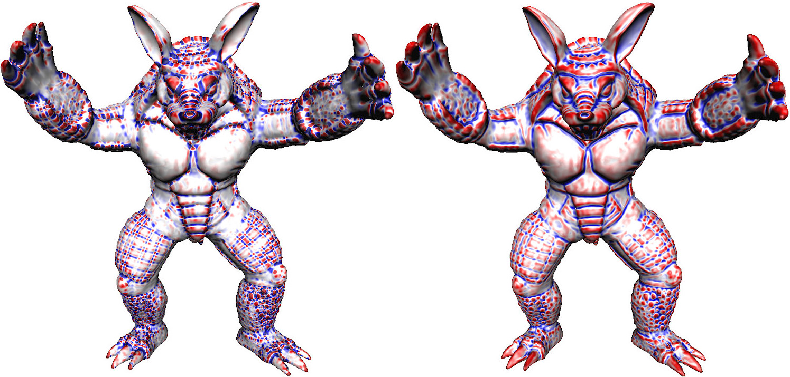
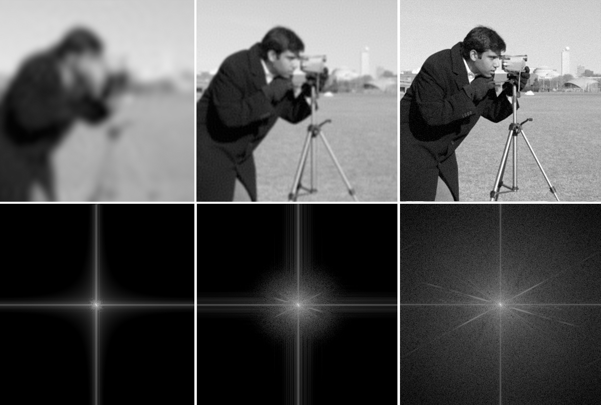
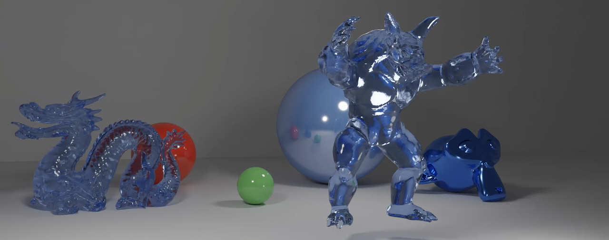
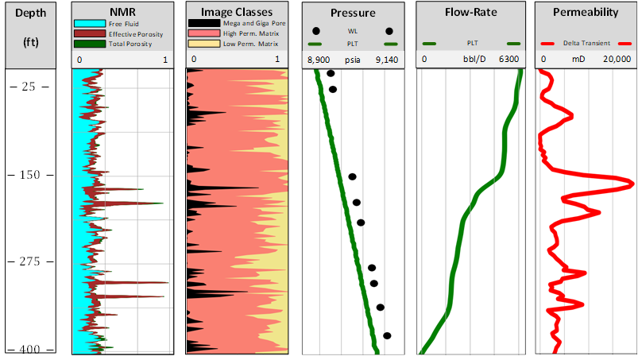
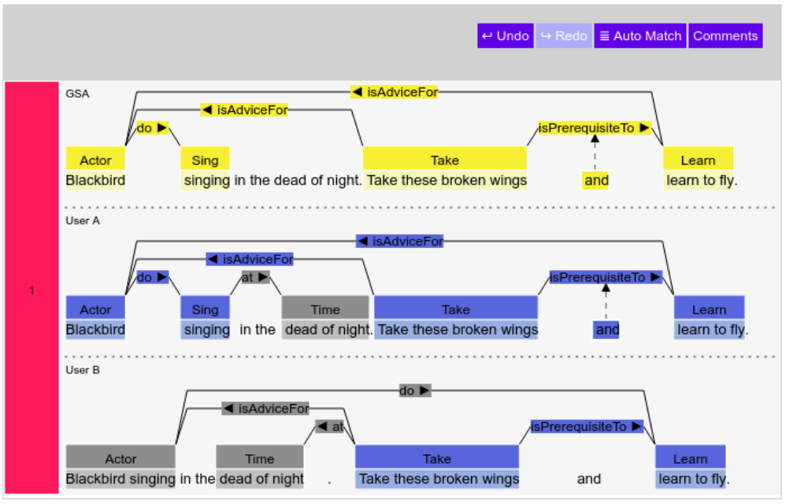
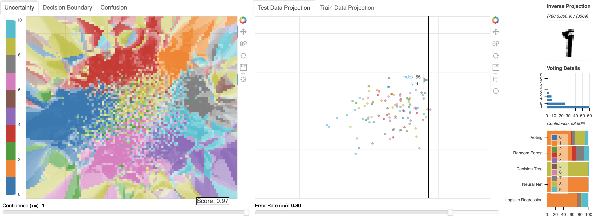
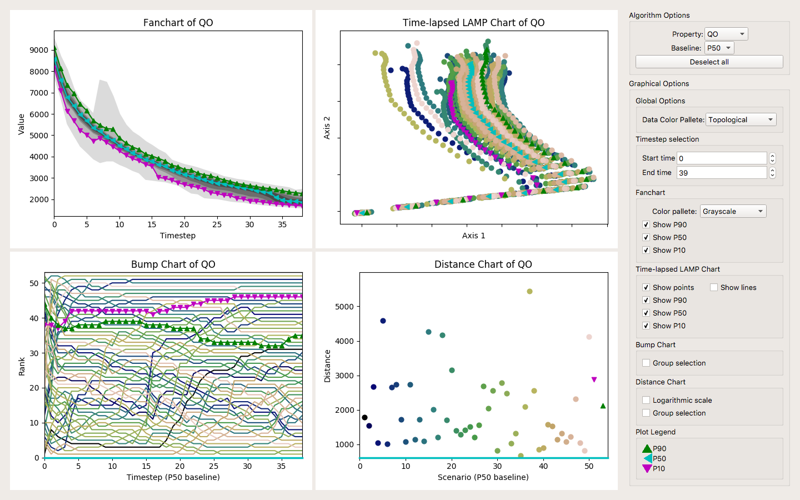

Guilherme G. Schardong
I'm currently a post-doctoral fellow at Institute of Systems and Robotics, University of Coimbra, where I work on projects with the Visual Information Security Team (VISTEAM). Up to January 2022, I was a research fellow at GALGOS/PUC-Rio, with experience on oil&gas industry from projects with PETROBRAS on well-testing and reservoir model inference. I'm also a part-time post-doc at Visgraf/IMPA, where I work on computer graphics and machine learning, with emphasis on implicit function reconstruction and rendering.
Background
I got my Bachelor's degree in Computer Science from UFSM in 2012 and a Master's degree in Informatics in the same university, in 2014, advised by prof. Cesar Pozzer. In 2018 I got my D.Sc. in Informatics at PUC-Rio, as a member of GALGOS. From 2014 to 2016 I worked as a developer under prof. Waldemar Celes on the Reservoir Visualization group on Tecgraf/PUC-Rio Institute. In 2016 I started working with prof. Hélio Lopes (being advised by him since 2015) and was co-advised by prof. Simone Barbosa during my doctorate. I'm currently a post-doctoral fellow at the Institute for Systems an Robotics, University of Coimbra at the VISTEAM group, led by prof Nuno Gonçalves. I'm also a part-time post-doc collaborator, supervised by prof. Luiz Velho from Visgraf/IMPA and prof. Hélio Lopes.
Research
My current research interests involve mainly AI for Graphics and Implicit Function representation. Below is a selected list of projects and publications from the last 5 years.
Exploring differential geometry in neural implicits [Project page]

Figure 1: Gaussian and Mean curvatures of the Stanford Armadillo. We calculated them from a smooth neural network trained on the Armadillo mesh. Afterwards, we used the analytical formulas of the curvatures on the neural network evaluated at the mesh vertices and plotted the results as colors.
Authors: Tiago Novello, Guilherme Schardong, Luiz Schirmer, Vinicius da Silva, Helio Lopes, Luiz Velho
Venue: Computers and Graphics (SIBGRAPI Special Issue 2022)
Multiresolution Neural Networks for Imaging [Project page]

Figure 2: Learning progressively more details of the Cameraman Image. On top, the reconstructions of the cameramen at each level of the network. On the bottom, the FFT spectra of the corresponding images.
Authors: Hallison Paz, Tiago Novello, Vinícius da Silva, Luiz Schirmer, Guilherme Schardong, Fabio Chagas, Helio Lopes, Luiz Velho
Venue: Main Track of SIBGRAPI 2022
Neural Networks for Implicit Representations of 3D Scenes [Paper link]

Figure 3: A survey on Neural Network methods for implicit representations
Authors: Luiz Schirmer, Guilherme Schardong, Vinícius da Silva, Tiago Novello, Daniel Yukimura, Thales Magalhães, Hallison Paz, Hélio Lopes, Luiz Velho
Venue: Tutorials of SIBGRAPI 2021
Incorporating Dynamic Production-Logging Data to the Permeability-Estimation Workflow Using Machine Learning [Paper link]

Figure 4: Estimating near-well Permeability given production, imaging and, gamma-ray data using neural networks.
Authors: Ciro Guimarães, Luiz Schirmer, Guilherme Schardong, Abelardo Barreto, Hélio Lopes
Venue: Society of Petroleum Engineers Journal, issue 25, 2020
Eras: Improving the quality control in the annotation process for Natural Language Processing tasks [Paper link] [Code repository]

Figure 5: Adjudication interface for ERAS, used for consolidating the annotations of multiple users.
Authors: Jonatas Grosman, Pedro Furtado, Ariane Bueno, Guilherme Schardong, Simone Barbosa, Hélio Lopes
Venue: Information System, issue 93, 2020
Visual exploration of an ensemble of classifiers [Paper link]

Figure 6: Exploration of classification results for various algorithms using linked views and dimensionality reduction.
Authors: Paula Ribeiro, Guilherme Schardong, Simone Barbosa, Clarisse de Souza, Hélio Lopes
Venue: Computers and Graphics (SIBGRAPI Special Issue 2019)
Visual interactive support for selecting scenarios from time-series ensembles [Paper link] [Code repository]

Figure 7: Main window of our prototype. Linked views and dimensionality reduction permit the navigation among complex, time-varying data, with the goal of picking the instances closest to an arbitrary goal (P10, P50 or P90 production percentiles in our case).